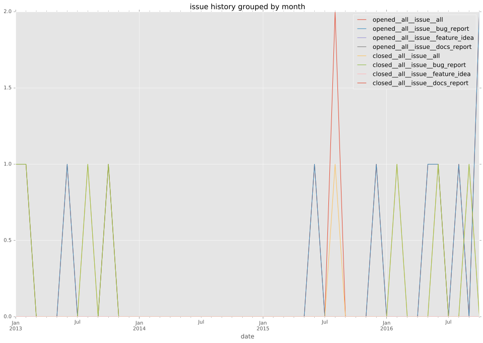
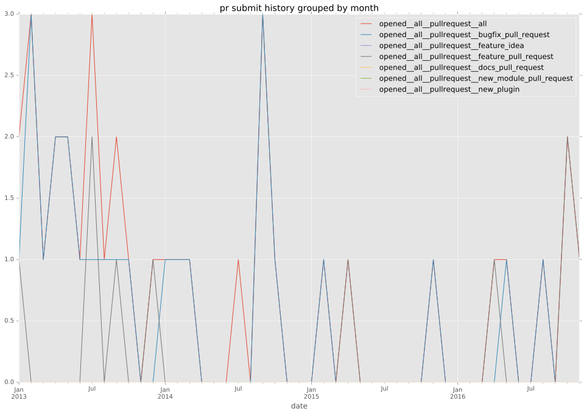
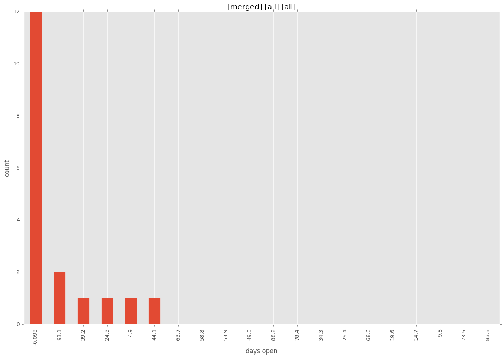
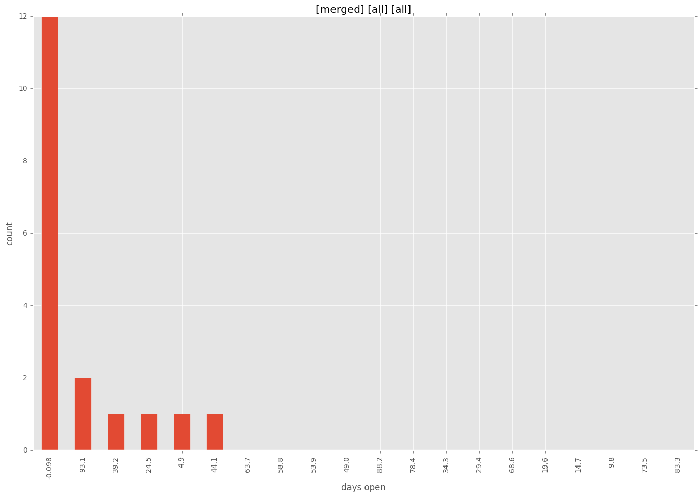

authors
- yeukhon
maintainers
- yeukhon
contributors
- mpdehaan : 3 commits
- matburt : 11 commits
- skyl : 23 commits
- abadger : 6 commits
- mscherer : 1 commits
- madsweitling : 6 commits
- natefoo : 8 commits
- dhozac : 1 commits
- sfromm : 3 commits
- catlee : 4 commits
- calebbrown : 1 commits
- jordiecometrica : 1 commits
- jctanner : 1 commits
- dagwieers : 2 commits
- jpmens : 2 commits
- yeukhon : 40 commits
- kisielk : 3 commits
total issue counts
feature pull request: 9
docs report: 1
pullrequest: 34
bugfix pull request: 24
issue: 12
bug report: 12
issue history

pullrequest history

days open by issue type
bugfix pull request
count: 37
std: 24.3830480669
min: 0
max: 98
median: 1.0
mean: 10.4594594595
all
count: 58
std: 62.3465812114
min: 0
max: 439
median: 2.0
mean: 23.4827586207
pullrequest
count: 0
std: nan
min: nan
max: nan
median: nan
mean: nan
docs report
count: 0
std: nan
min: nan
max: nan
median: nan
mean: nan
feature pull request
count: 12
std: 34.3586255766
min: 2
max: 96
median: 13.0
mean: 29.1666666667
issue
count: 0
std: nan
min: nan
max: nan
median: nan
mean: nan
bug report
count: 9
std: 142.082820136
min: 0
max: 439
median: 2.0
mean: 69.4444444444
closures grouped by total days open

 
